Tsung Capacity Test
Introduction
In this post we are going to analyze a very interesting Erlang distributed load testing tool, called Tsung [1]. The cool things about this tool is the complete HTML report of each connection made.
NOTE If you are interested on real traffic replication, consider this project [2].
Configuration
On tsung.xml we start the test plan, you can include here the list of clients, servers, the number/load time, as other sessions definitions.
Master
We are going to start a distributed load with a base setup for clients and server. For this case we have 5 x M3.large instances, with shared VPC, SSH access and Tsung already installed.
Configure your /etc/hosts file:
172.31.24.176 node1
172.31.24.173 node2
172.31.24.174 node3
172.31.24.172 node4
172.31.24.175 node5
Enable Nginx to host logs on /etc/nginx/sites-enabled/default:
root /home/admin/.tsung/log;
index index.html index.htm index.nginx-debian.html;
server_name _;
location / {
autoindex on;
try_files $uri $uri/ =404;
}
Lets enable the nginx.conf to handle more concurrent connections:
worker_processes 10;
pid /run/nginx.pid;
events {
worker_connections 20000;
multi_accept on;
}
In the sequence, we define the Tsung configuration file with the load and arrival packets time. We are going to do a progressive load of 2 minutes on the first batch in a rate of 500 rps. On the second batch it's going to be increased to 1000 rps for more 2 minutes
|
|
Running the load test
Initialize the test against another M3.large machine:
$ tsung -f tsung.xml start
For this start configuration we have:
1000 rps * 10 for 2 minutes
1.145.850 requests
11.18ms average response time
1.18Gb of data
Nginx is handling 9.6k rps with 10 workers on 12% of CPU in the average.
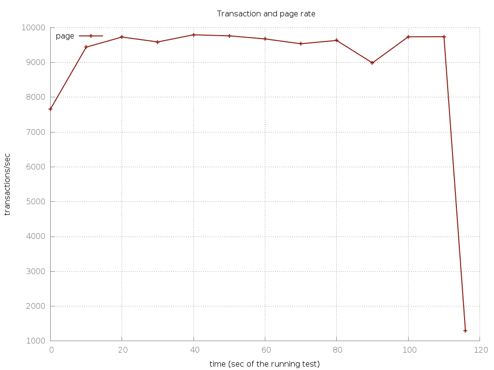
In the second test we are going to increase the number of requests to 50
<session name="http-example" probability="100" type="ts_http">
<for from="1" to="50" var="i">
<request> <http url="/" method="GET" version="1.1" ></http> </request>
</for>
</session>
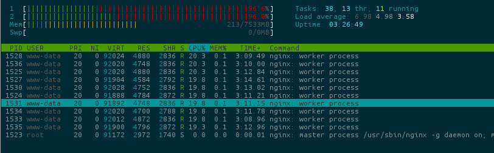
In the next 4 minutes we can see the increase of CPU usage to 100% distributed by the workers.
9.148.140 requests
27067 req with 500 status code.
182580 connection * 50.
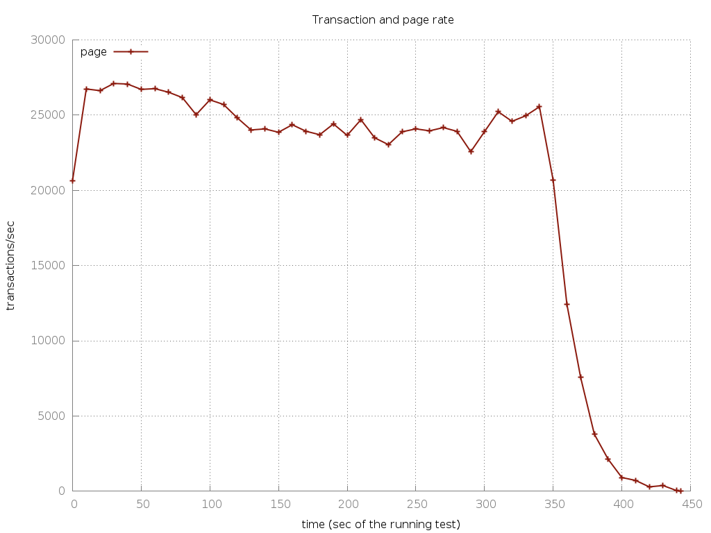 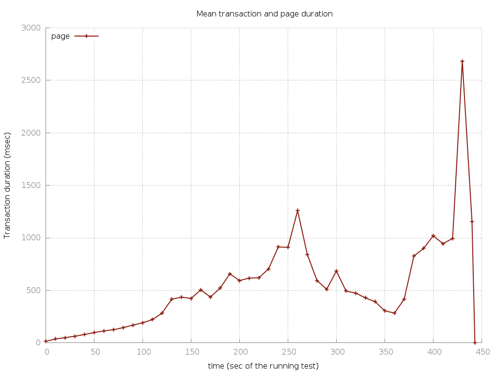
On 120s our arrivalphase goes to 1000 conn/s, we can see the transaction duration increasing and the staled 25k rps.
We hit the limit nginx for this server setup, so for more fun lets increase the workers by 100, and rerun the tests:
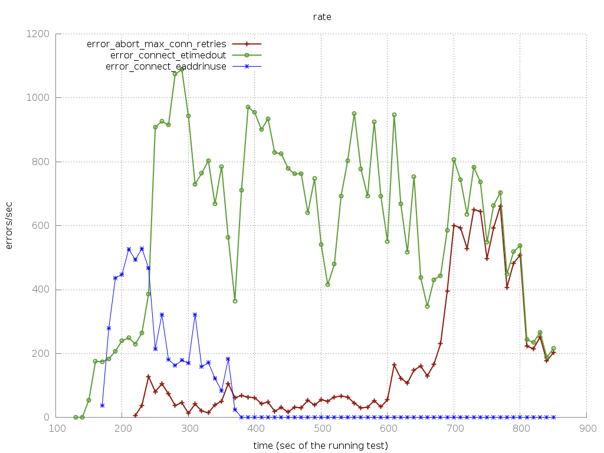 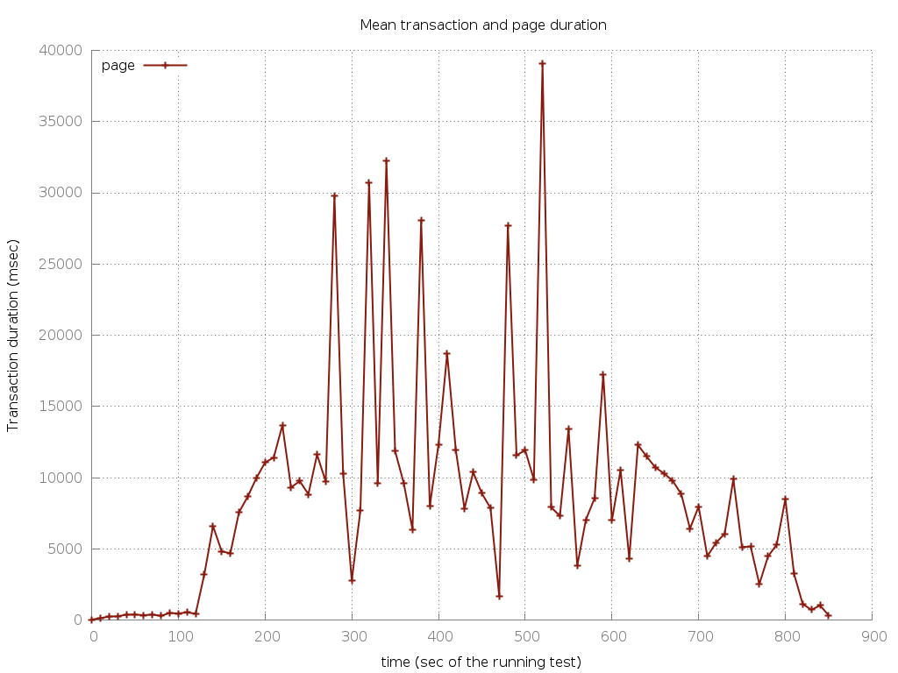
Now we have 1000 connections * 100 = 100k rps, after 120s we have a DDoS.
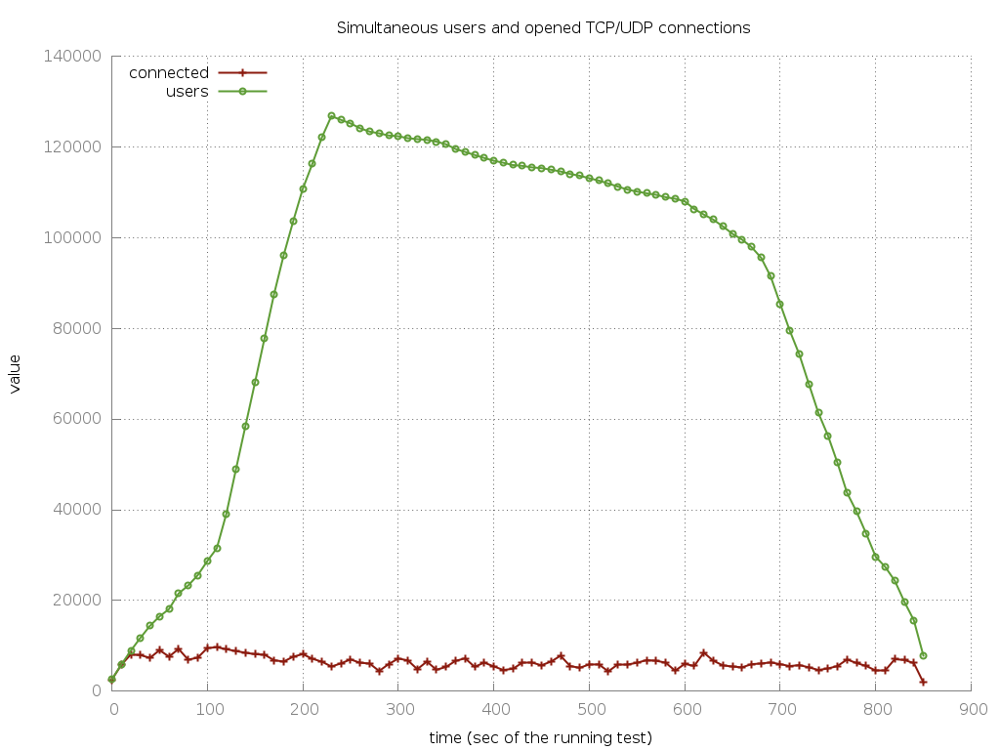 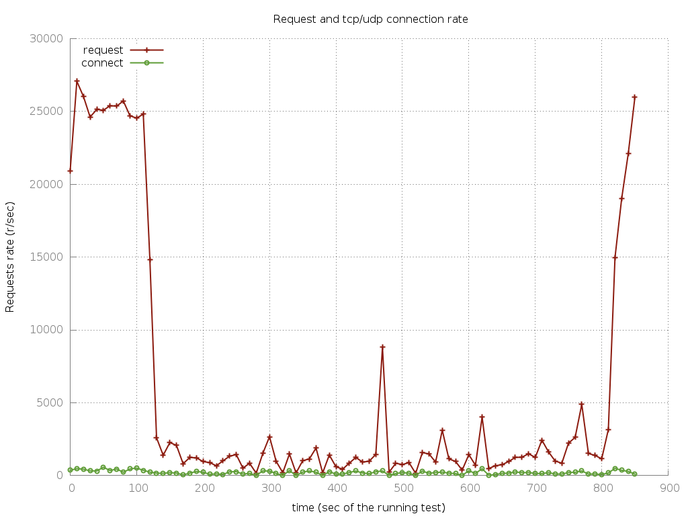
We have a huge amount of open connections in the queue and after 11 minutes it was still processing it.
Elastic Load Balancing - 2x
To finalize this post lets scale it horizontally using EBS [3] of AWS. Lets put 2 instances M3.large behind it.
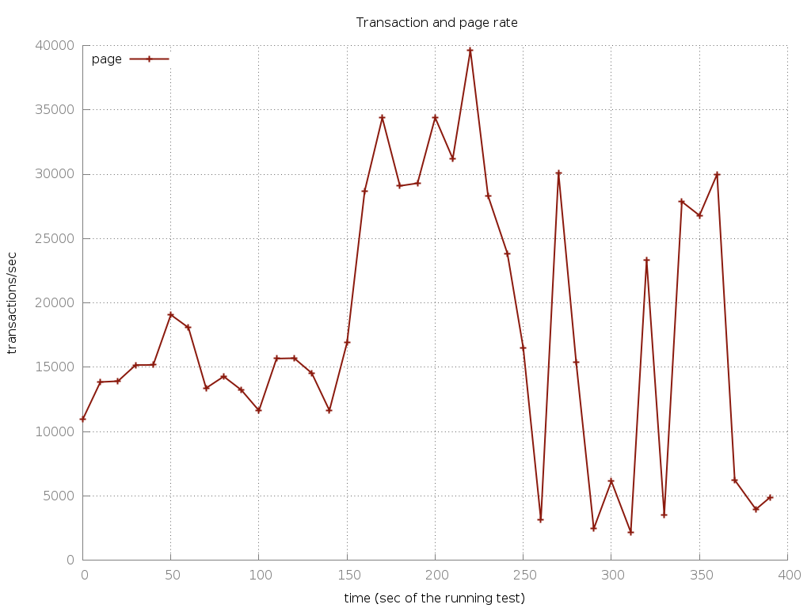 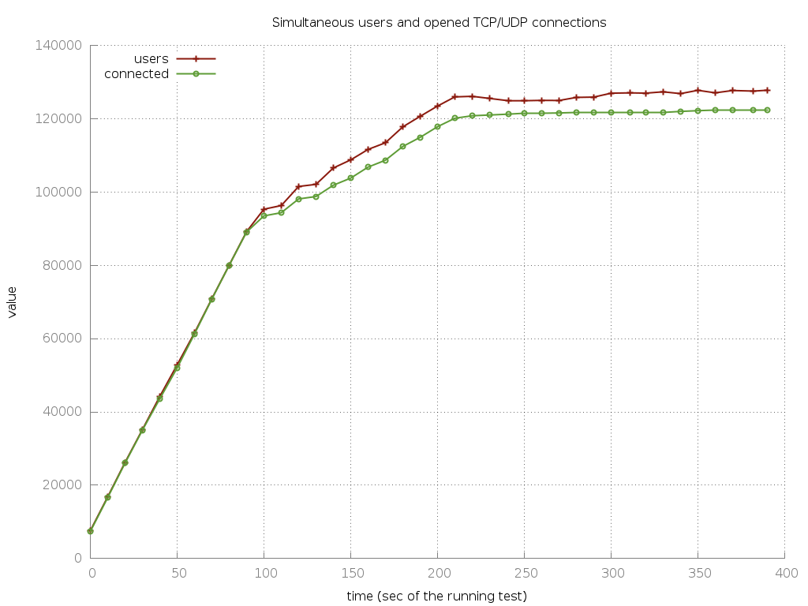 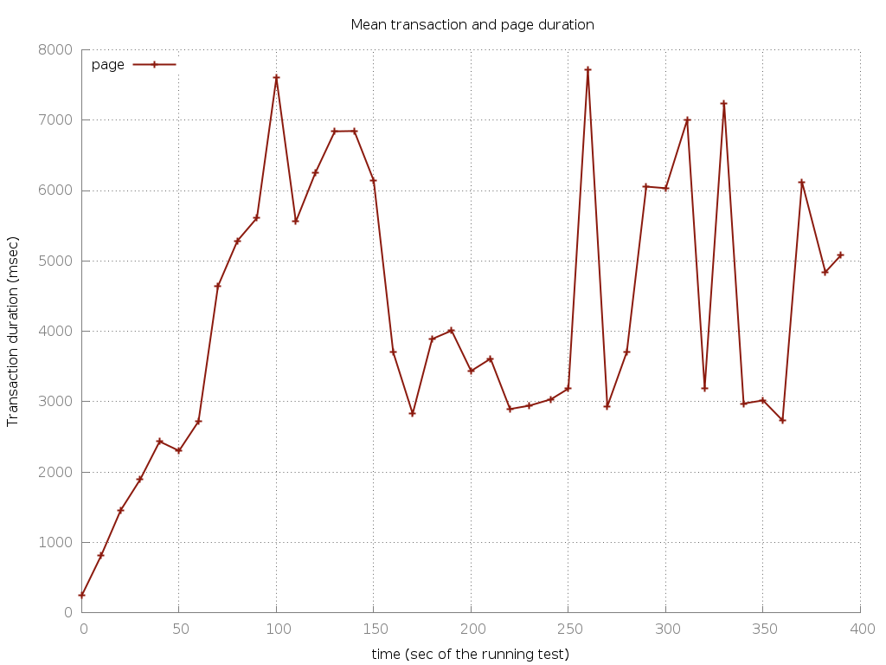
We can see the split between the two boxes, there's still a high response time and:
5.974.601 req with status code 200
1.172.873 req with status code 503 (unavailable service).
Conclusion
This test served as an introduction on how to work with Tsung and organize a load test with our infrastructure, it shows some ideas and numbers for a better insight on how to build your own.
Listening